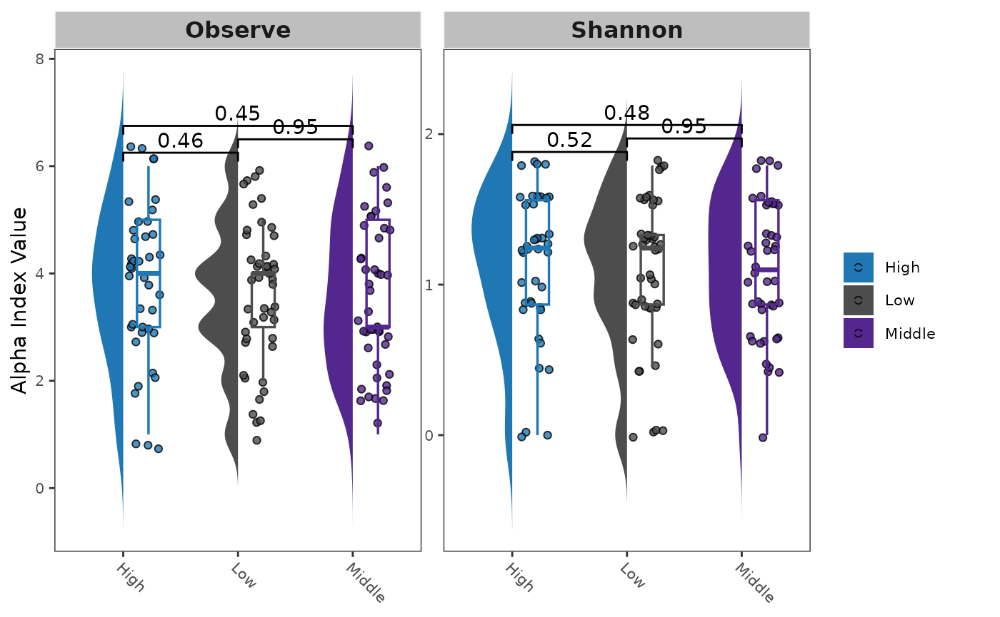

library(MiscMetabar)
data(data_fungi)Alpha diversity
Hill number
Numerous metrics of diversity exist. Hill numbers 1 is a kind of general framework for alpha diversity index.
renyi_res <- vegan::renyi(data_fungi@otu_table)
head(renyi_res)
#> 0 0.25 0.5 1 2
#> A10-005-B_S188_MERGED.fastq.gz 4.204693 3.615323 3.044244 2.0754183 1.1561862
#> A10-005-H_S189_MERGED.fastq.gz 4.248495 3.150337 2.063712 0.9938545 0.6464533
#> A10-005-M_S190_MERGED.fastq.gz 3.988984 3.607773 3.308361 2.9304156 2.5781603
#> A12-007_S191_MERGED.fastq.gz 5.036953 4.423283 3.751946 2.6309045 1.8468497
#> A12-007-B_S2_MERGED.fastq.gz 3.850148 3.349461 2.874269 2.1881145 1.6533262
#> A15-004_S3_MERGED.fastq.gz 4.025352 3.890614 3.747555 3.4533352 2.9618789
#> 4 8 16 32
#> A10-005-B_S188_MERGED.fastq.gz 0.8007816 0.6864775 0.6407124 0.6200442
#> A10-005-H_S189_MERGED.fastq.gz 0.5146170 0.4469617 0.4172228 0.4037640
#> A10-005-M_S190_MERGED.fastq.gz 2.3022639 2.1015018 1.9744485 1.9110311
#> A12-007_S191_MERGED.fastq.gz 1.5920328 1.4947479 1.4421368 1.4109287
#> A12-007-B_S2_MERGED.fastq.gz 1.3979355 1.2774402 1.2106906 1.1733049
#> A15-004_S3_MERGED.fastq.gz 2.4997916 2.2378349 2.1045646 2.0377518
#> 64 Inf
#> A10-005-B_S188_MERGED.fastq.gz 0.6102022 0.6006678
#> A10-005-H_S189_MERGED.fastq.gz 0.3973550 0.3911464
#> A10-005-M_S190_MERGED.fastq.gz 1.8806976 1.8513117
#> A12-007_S191_MERGED.fastq.gz 1.3916365 1.3700776
#> A12-007-B_S2_MERGED.fastq.gz 1.1547034 1.1366612
#> A15-004_S3_MERGED.fastq.gz 2.0054156 1.9740810Test for difference in diversity (hill number)
One way to keep into account for difference in the number of sequences per samples is to use a Tukey test on a linear model with the square roots of the number of sequence as the first explanatory variable of the linear model 2.
p <- MiscMetabar::hill_pq(data_fungi, variable = "Height")
p$plot_Hill_0
Hill number 1
p$plot_tuckey
Result of the Tuckey post-hoc test
See also the tutorial of the microbiome package for an alternative using the non-parametric Kolmogorov-Smirnov test for two-group comparisons when there are no relevant covariates.
Alpha diversity using package MicrobiotaProcess
library("MicrobiotaProcess")
library("ggh4x")
clean_pq(subset_samples_pq(data_fungi, !is.na(data_fungi@sam_data$Height))) %>%
as.MPSE() %>%
mp_cal_alpha() %>%
mp_plot_alpha(.group = "Height")
#> Warning in wilcox.test.default(c(4, 4, 5, 5, 4, 4, 3, 6, 3, 4, 3, 2, 3, :
#> cannot compute exact p-value with ties
#> Warning in wilcox.test.default(c(3, 4, 3, 5, 4, 6, 3, 5, 4, 4, 3, 3, 3, :
#> cannot compute exact p-value with ties
#> Warning in wilcox.test.default(c(3, 4, 3, 5, 4, 6, 3, 5, 4, 4, 3, 3, 3, :
#> cannot compute exact p-value with ties
#> Warning in wilcox.test.default(c(1.32966134885476, 1.242453324894,
#> 1.56071040904141, : cannot compute exact p-value with ties
#> Warning in wilcox.test.default(c(0.867563228481461, 1.32966134885476,
#> 0.867563228481461, : cannot compute exact p-value with ties
#> Warning in wilcox.test.default(c(0.867563228481461, 1.32966134885476,
#> 0.867563228481461, : cannot compute exact p-value with ties
Session information
sessionInfo()
#> R version 4.3.2 (2023-10-31)
#> Platform: x86_64-pc-linux-gnu (64-bit)
#> Running under: Ubuntu 22.04.3 LTS
#>
#> Matrix products: default
#> BLAS: /usr/lib/x86_64-linux-gnu/openblas-pthread/libblas.so.3
#> LAPACK: /usr/lib/x86_64-linux-gnu/openblas-pthread/libopenblasp-r0.3.20.so; LAPACK version 3.10.0
#>
#> locale:
#> [1] LC_CTYPE=C.UTF-8 LC_NUMERIC=C LC_TIME=C.UTF-8
#> [4] LC_COLLATE=C.UTF-8 LC_MONETARY=C.UTF-8 LC_MESSAGES=C.UTF-8
#> [7] LC_PAPER=C.UTF-8 LC_NAME=C LC_ADDRESS=C
#> [10] LC_TELEPHONE=C LC_MEASUREMENT=C.UTF-8 LC_IDENTIFICATION=C
#>
#> time zone: UTC
#> tzcode source: system (glibc)
#>
#> attached base packages:
#> [1] stats graphics grDevices utils datasets methods base
#>
#> other attached packages:
#> [1] ggh4x_0.2.7 MicrobiotaProcess_1.14.0 MiscMetabar_0.6.1
#> [4] dplyr_1.1.4 dada2_1.30.0 Rcpp_1.0.12
#> [7] ggplot2_3.4.4 phyloseq_1.46.0
#>
#> loaded via a namespace (and not attached):
#> [1] libcoin_1.0-10 RColorBrewer_1.1-3
#> [3] jsonlite_1.8.8 magrittr_2.0.3
#> [5] TH.data_1.1-2 modeltools_0.2-23
#> [7] farver_2.1.1 rmarkdown_2.25
#> [9] fs_1.6.3 zlibbioc_1.48.0
#> [11] ragg_1.2.7 vctrs_0.6.5
#> [13] multtest_2.58.0 memoise_2.0.1
#> [15] Rsamtools_2.18.0 RCurl_1.98-1.14
#> [17] ggtree_3.10.0 htmltools_0.5.7
#> [19] S4Arrays_1.2.0 Rhdf5lib_1.24.1
#> [21] gridGraphics_0.5-1 SparseArray_1.2.3
#> [23] rhdf5_2.46.1 sass_0.4.8
#> [25] bslib_0.6.1 desc_1.4.3
#> [27] plyr_1.8.9 sandwich_3.1-0
#> [29] zoo_1.8-12 cachem_1.0.8
#> [31] GenomicAlignments_1.38.2 igraph_1.6.0
#> [33] lifecycle_1.0.4 iterators_1.0.14
#> [35] pkgconfig_2.0.3 Matrix_1.6-1.1
#> [37] R6_2.5.1 fastmap_1.1.1
#> [39] GenomeInfoDbData_1.2.11 MatrixGenerics_1.14.0
#> [41] aplot_0.2.2 digest_0.6.34
#> [43] ggnewscale_0.4.9 colorspace_2.1-0
#> [45] ShortRead_1.60.0 patchwork_1.2.0
#> [47] S4Vectors_0.40.2 textshaping_0.3.7
#> [49] GenomicRanges_1.54.1 hwriter_1.3.2.1
#> [51] vegan_2.6-4 labeling_0.4.3
#> [53] fansi_1.0.6 abind_1.4-5
#> [55] mgcv_1.9-0 compiler_4.3.2
#> [57] withr_3.0.0 BiocParallel_1.36.0
#> [59] highr_0.10 ggsignif_0.6.4
#> [61] MASS_7.3-60 DelayedArray_0.28.0
#> [63] biomformat_1.30.0 permute_0.9-7
#> [65] tools_4.3.2 ape_5.7-1
#> [67] glue_1.7.0 nlme_3.1-163
#> [69] rhdf5filters_1.14.1 grid_4.3.2
#> [71] cluster_2.1.4 reshape2_1.4.4
#> [73] ade4_1.7-22 generics_0.1.3
#> [75] gtable_0.3.4 tidyr_1.3.0
#> [77] data.table_1.14.10 coin_1.4-3
#> [79] utf8_1.2.4 XVector_0.42.0
#> [81] BiocGenerics_0.48.1 ggrepel_0.9.5
#> [83] foreach_1.5.2 pillar_1.9.0
#> [85] stringr_1.5.1 yulab.utils_0.1.3
#> [87] splines_4.3.2 gghalves_0.1.4
#> [89] treeio_1.26.0 lattice_0.21-9
#> [91] survival_3.5-7 deldir_2.0-2
#> [93] tidyselect_1.2.0 Biostrings_2.70.1
#> [95] knitr_1.45 gridExtra_2.3
#> [97] IRanges_2.36.0 SummarizedExperiment_1.32.0
#> [99] ggtreeExtra_1.12.0 stats4_4.3.2
#> [101] xfun_0.41 Biobase_2.62.0
#> [103] matrixStats_1.2.0 stringi_1.8.3
#> [105] lazyeval_0.2.2 ggfun_0.1.4
#> [107] yaml_2.3.8 evaluate_0.23
#> [109] codetools_0.2-19 interp_1.1-5
#> [111] tibble_3.2.1 ggplotify_0.1.2
#> [113] cli_3.6.2 RcppParallel_5.1.7
#> [115] systemfonts_1.0.5 munsell_0.5.0
#> [117] jquerylib_0.1.4 GenomeInfoDb_1.38.5
#> [119] png_0.1-8 parallel_4.3.2
#> [121] pkgdown_2.0.7 latticeExtra_0.6-30
#> [123] jpeg_0.1-10 bitops_1.0-7
#> [125] ggstar_1.0.4 mvtnorm_1.2-4
#> [127] tidytree_0.4.6 scales_1.3.0
#> [129] purrr_1.0.2 crayon_1.5.2
#> [131] rlang_1.1.3 multcomp_1.4-25